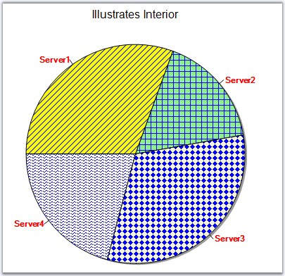

This property will allow the user to set a solid back color, gradient or pattern style for the data points.
|
Details | |
|
Possible Values |
A BrushInfo object |
|
Default Value |
None |
|
2D / 3D Limitations |
No |
|
Applies to Chart Element |
All series and points |
|
Applies to Chart Types |
All Chart Types |
Series Wide Setting
The spline area interior brush can be customized using the ChartSeries.Style.Interior property as shown below.
The interior color of the chart series can be customized by using the Interior property of the ChartStyleInfo class. The following code illustrates this.
|
[C#]
// This sets the interior color for the series. This can be done for any number of series. this.chartControl1.Series[0].Style.Interior = new BrushInfo(GradientStyle.Horizontal ,Color.AliceBlue, Color.Green); |
|
[VB.NET]
' This sets the interior color for the series. This can be done for any number of series. Me.chartControl1.Series(0).Style.Interior = New BrushInfo(GradientStyle.Horizontal,Color.AliceBlue, Color.Green) |
Figure 153: Chart control with Gradient Control
Specific Data Point Setting
You can also set interior color for individual data points using Series.Styles[0].Interior property.
|
[C#]
this.chartControl1.Series[0].Styles[0].Interior = new BrushInfo(GradientStyle.Horizontal ,Color.AliceBlue, Color.Green); this.chartControl1.Series[0].Styles[1].Interior = new BrushInfo(GradientStyle.Horizontal ,Color.Blue, Color.AliceBlue); |
|
[VB.NET]
Me.chartControl1.Series(0).Styles[0].Interior = New BrushInfo(GradientStyle.Horizontal,Color.AliceBlue, Color.Green) Me.chartControl1.Series(0).Styles[1].Interior = New BrushInfo(GradientStyle.Horizontal,Color.Blue, Color.AliceBlue) |
PieChart Specific
When rendering pie charts, it's sometimes very helpful to render a patterned background for each slice, while printing the pie on a gray scale printer. You can do so easily as shown below. The code here is for a Pie Chart series with 4 points.
|
[C#]
series1.Styles[0].Interior = new BrushInfo(PatternStyle.BackwardDiagonal, new BrushInfoColorArrayList(new Color[] { Color.Yellow, Color.Blue })); series1.Styles[1].Interior = new BrushInfo(PatternStyle.Cross, new BrushInfoColorArrayList(new Color[] { Color.LightGreen, Color.Blue })); series1.Styles[2].Interior = new BrushInfo(PatternStyle.SolidDiamond, new BrushInfoColorArrayList(new Color[] { Color.Beige, Color.Blue })); series1.Styles[3].Interior = new BrushInfo(PatternStyle.Wave, new BrushInfoColorArrayList(new Color[] { Color.White, Color.Blue })); series1.Styles[0].Text = "Server1"; series1.Styles[1].Text = "Server2"; series1.Styles[2].Text = "Server3"; series1.Styles[3].Text = "Server4"; |
|
[VB.NET]
series1.Styles(0).Interior = New BrushInfo(PatternStyle.BackwardDiagonal, New BrushInfoColorArrayList(New Color() { Color.Yellow, Color.Blue })) series1.Styles(1).Interior = New BrushInfo(PatternStyle.Cross, New BrushInfoColorArrayList(New Color() { Color.LightGreen, Color.Blue })) series1.Styles(2).Interior = New BrushInfo(PatternStyle.SolidDiamond, New BrushInfoColorArrayList(New Color() { Color.Beige, Color.Blue })) series1.Styles(3).Interior = New BrushInfo(PatternStyle.Wave, New BrushInfoColorArrayList(New Color() { Color.White, Color.Blue })) series1.Styles(0).Text = "Server1" series1.Styles(1).Text = "Server2" series1.Styles(2).Text = "Server3" series1.Styles(3).Text = "Server4" |

Figure 154: Unique PatternStyle for each Slice in Pie Chart
See Also